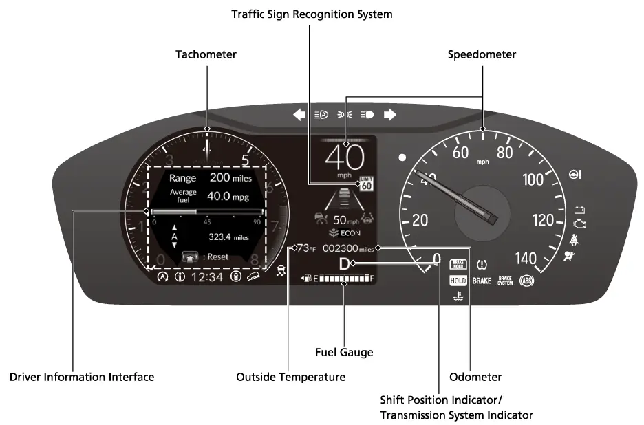
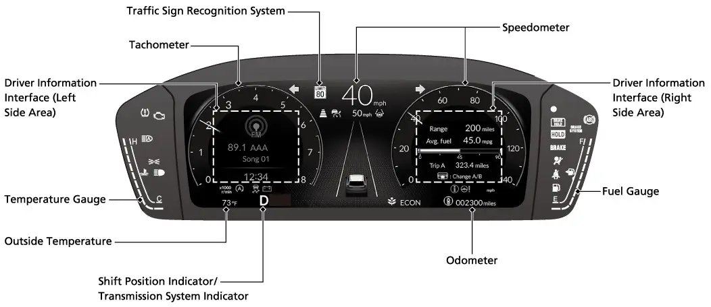
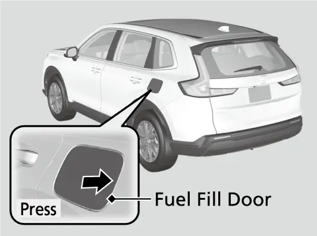
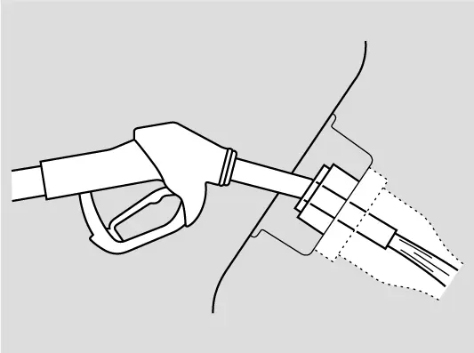
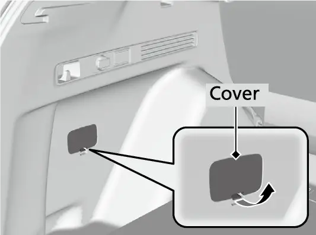
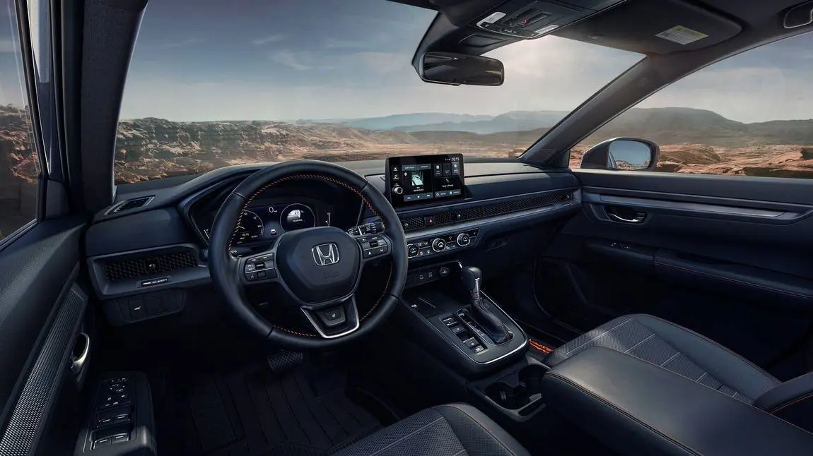
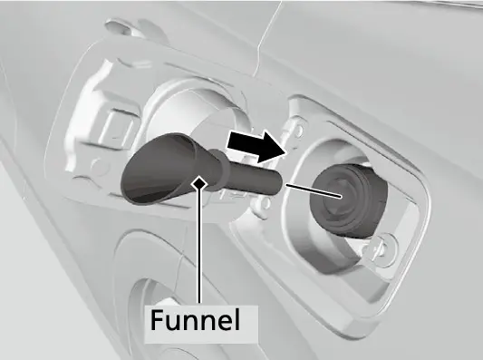
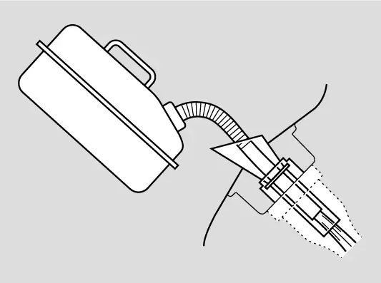
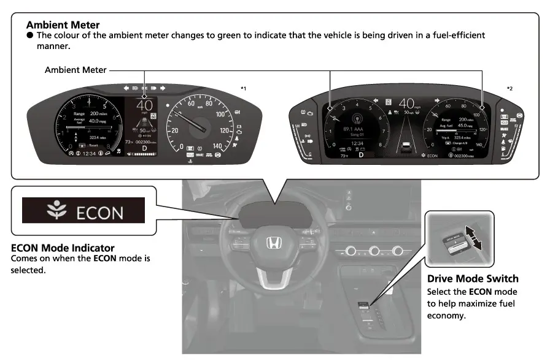
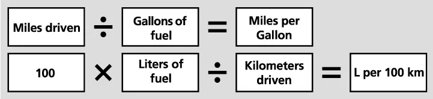

קאפיטל 4
בענזין און בענזין-עקאנאמיע
זייטן 57–67 אינעם PDF
דעם ריכטיגן בענזין אויסקלייבן
Honda'ס אפיציעלע ספעציפיקאציעס רעקאמענדירן Regular Unleaded (געווענליכער בענזין אן בליי) פאר די EX. דער אונער'ס מאנואל איז מער גענוי: בענזין אן בליי מיט א פאמפ אקטאן נומער פון 87 אדער העכער. דער אקטאן איז די גרויסע נומער אויף די קנעפלען פון די סארטן ביים פאמפ. ער זאגט אייך ווי גוט דער בענזין האלט זיך איין פון אנצינדן זיך צו פרי אינעם מאטאר. דער מאנואל ווארנט אז בענזין מיט נידעריגערן אקטאן קען מאכן א שטענדיגן, שווערן מעטאלישן קלאפ-קלאנג, וואס קען שעדיגן דעם מאטאר. האלט 87 פאר'ן מינימום און גייט קיינמאל נישט אונטער דעם.
עטאנאל און מעטאנאל
אסאך פאמפס פארקויפן בענזין געמישט מיט עטאנאל, א טייל פונעם בענזין וואס איז געמאכט פון אלקאהאל. דער מאנואל רופט די מישונגען "oxygenated" (מיט זויערשטאף) בענזין, און זאגט אז די CR-V איז געבויט צו פארן מיט בענזין וואס האט ביז 15 פראצענט עטאנאל לויט'ן פארנעם. דער מאנואל דערמאנט נישט E85 ביים נאמען, אבער E85 איז ווייט העכער פון דעם 15 פראצענט גרענעץ, דעריבער איז עס נישט קיין בענזין פאר דעם קאר. דער מאנואל זאגט אויך קלאר אז מען טאר נישט ניצן בענזין מיט methanol (מעטאנאל). אויב דער קאר פארט נישט גוט נאכן אנפילן, רעקאמענדירט Honda צו פרובירן אן אנדער גאז סטעישן אדער איבערגיין צו אן אנדער בראנד בענזין.
שנעלע טאבעלע וועגן בענזין פאר די EX
| זאך | אפיציעלע אנווייזונג |
|---|---|
| סארט בענזין | אן בליי (Regular Unleaded) |
| אקטאן | 87 פאמפ אקטאן אדער העכער |
| עטאנאל | ביז 15% לויט'ן פארנעם |
| E85 | נישט פאסיג (ווייט העכער פון 15%) |
| מעטאנאל | נישט ניצן |
| טאנק גרייס | 14 US gal (53 L) |
דעטערדזשענטן, TOP TIER און MMT
דער מאנואל רעקאמענדירט גוטן בענזין מיט דעטערדזשענט צוגאבן (רייניגונגס-מיטלען), וואס העלפן אפהאלטן שמוץ-אנזאמלונגען אין דער בענזין סיסטעם און אינעם מאטאר. די מאס דעטערדזשענט איז אנדערש ביי יעדן בראנד, דעריבער שטיצט Honda דעם TOP TIER Detergent Gasoline (TOP TIER בענזין מיט דעטערדזשענטן) וואו מען קען עס באקומען. TOP TIER איז א בענזין סטאנדארט וואס די פירנדיגע קאר-פירמעס האבן צוזאמען אויפגעשטעלט. לויטן מאנואל איז גאראנטירט אז עס האט די ריכטיגע מאס דעטערדזשענט צוגאבן און קיין מעטאלישע צוגאבן, און ביידע זאכן העלפן אויסמיידן שמוץ-אנזאמלונגען אינעם מאטאר און אין דער עמיסיע קאנטראל סיסטעם. סטעישנס וואס שטימען צו ווייזן געווענליך דעם נאמען TOP TIER ביים פאמפ.
Honda רעקאמענדירט אויך שטארק אויסצומיידן בענזין מיט שעדליכע צוגאבן אויף א מאנגאן-באזיס, ווי MMT, וואו מען קען באקומען בענזין אן MMT. דער מאנואל זאגט אז די צוגאבן קענען שאטן די לייסטונג, די בענזין-שפארונג און די עמיסיע קאנטראל, און קענען אנצינדן דעם malfunction indicator lamp (דאס ליכטל פאר א פעלער, דער check-engine ליכט). אויב דאס טרעפט, פארבינדט אייך מיט א דילער פאר סערוויס.

וואו אליין צו באשטעטיגן Honda'ס אנווייזונגען וועגן בענזין
- אונער'ס מאנואל: דער בלאט מיטן טיטל Fuel Information (אינפארמאציע וועגן בענזין).
- www.hondacars.com: נאך אינפארמאציע וועגן בענזין, אריינגערעכנט בענזין אן MMT (קאנאדע: www.honda.ca אדער www.honda.ca/fr).
- www.toptiergas.com: TOP TIER בענזין בראנדס.
- Honda Information Center פיטשער גייד: דער בלאט EPA(EPA Fuel-Economy Ratings בענזין-שאצונגען), וואס ווייזט Regular Unleaded און דעם 14-גאלאן טאנק פאר יעדן CR-V מאדעל.
דער בענזין-מעסטער און דער טאנק
דער טאנק נעמט אריין 14 US גאלאנען (53 ליטער), לויט סיי דעם מאנואל און סיי Honda'ס ספעציפיקאציעס. אויפן 7-אינטש מעטער, וואס דער מאנואל רופט A-type meter (דער A-סארט מעטער), באווייזט זיך דער בענזין-מעסטער ווען דער power mode (דער פאוער מאדָע) איז ON, צוזאמען מיטן ספידאמעטער און אנדערע שייכותדיגע אינדיקאטארן.

דער מאנואל זאגט צו אנפילן ווען דער ווייזער דערנענטערט זיך צו E. אויסלויפן פון בענזין קען מאכן דעם מאטאר אויסלאזן (misfri e), און דאס קען שעדיגן דעם catalytic converter (קאטאליטישער קאנווערטער), א טייערער עמיסיע טייל. נאך א קליינער צוגאב, אדער לויט דעם צושטאנד פונעם קאר, קען די אמת'ע מאס בענזין אינעם טאנק זיין אנדערש ווי דער מעסטער ווייזט.
דער מאנואל דערמאנט אויך אז מען קען טוישן דעם אויסזען פונעם מעסטער אויפן מעטער. פאר ווארענונגען וועגן בענזין שיקט אייך דער Fuel Information בלאט צום מאנואל'ס Indicators (אינדיקאטארן) אפטייל. קאפיטל 6 דערקלערט די דעשבארד אינדיקאטארן און דעם driver information interface (דער דרייווער אינפארמאציע סקרין) סקרין נאך סקרין. די מאנואל בלעטער וואס מען האט גענוצט פאר דעם קאפיטל באשרייבן נישט אין פרטים די טריפ קאמפיוטער'ס ווייזונגען פון בענזין-שפארונג און ווי ווייט מען קען נאך פארן, דעריבער ווערן זיי דא נישט באהאנדלט. צו מעסטן די אמת'ע בענזין-שפארונג, ניצט דעם מאנואל'ס רעקאמענדירטן מעטאד, וואס ווערט באשריבן שפעטער אין דעם קאפיטל.

אפיציעלע EPA שאצונגען
אלע-רעדער דרייוו (AWD) איז א נאך-אפציע אויף די EX. ניצט די ריי אין דער טאבעלע וואס פאסט צו אייער קאר. Honda'ס פיטשער גייד ווייזט די זעלבע ציפערן פאר די LX און EX-L, וואס האבן דעם זעלבן 1.5 ליטער טורבא מאטאר און דעם CVT (טראנסמיסיע אן פעסטע גאנגען).
EPA בענזין-שפארונג, CR-V EX (mpg)
| דרייוו סיסטעם | שטאט | הייוועי | צוזאמען |
|---|---|---|---|
| פראנט-רעדער דרייוו | 28 | 33 | 30 |
| אלע-רעדער דרייוו | 27 | 31 | 29 |
ווי ווייט א טאנק קען אייך ברענגען
Honda'ס מקורות געבן נישט קיין אפיציעלע ציפער ווי ווייט מען קען פארן. א פשוט'ער חשבון גיט אבער אן אומגעפערע געדאנק. דאס זענען שאצונגען און נישט קיין אפיציעלע Honda נומערן.
געשאצטע ווייטקייט מיט 14 גאלאן (נישט קיין אפיציעלע Honda ציפערן)
| פאל | חשבון | אומגעפער |
|---|---|---|
| FWD צוזאמען | 14 × 30 | 420 מייל |
| AWD צוזאמען | 14 × 29 | 406 מייל |
| FWD שטאט | 14 × 28 | 392 מייל |
| FWD הייוועי | 14 × 33 | 462 מייל |
יעדע ציפער רעכנט אז איר פארט ביז דער טאנק איז אינגאנצן ליידיג, וואס דער מאנואל זאגט נישט צו טון. פלאנירט אייערע אנפילונגען גוט פאר דער ווייזער דערגרייכט E.
אנפילן ביים פאמפ
די EX האט א capless fuel filler (אנפילער אן א דעקל), אזוי אז עס איז נישטא קיין גאז-דעקל אויסצודרייען. איר שטעקט דעם פאמפ נאזל גלייך אריין אינעם אנפיל-האלדז, און דער טאנק פארמאכט זיך אליין ווען איר ציט ארויס דעם נאזל. Honda'ס פיטשער גייד זאגט אז דאס מאכט דאס אנפילן שנעלער און באקוועמער: מען דארף נישט אראפנעמען קיין דעקל, און קיין דעקל שלאגט זיך נישט אן די זייט פונעם קאר. Honda'ס ספעציפיקאציעס ווייזן אויך א push-to-release fuel fli ler door (בענזין-טירל וואס עפנט זיך מיט א דריק) אלס סטאנדארט.
אויפשליסן דאס בענזין-טירל
דאס בענזין-טירל ווערט פארשלאסן און אויפגעשלאסן צוזאמען מיט דער טיר פון דרייווער. איר קענט עס אויפשליסן מיטן לאק-טאב אדער מיטן master door lock switch (דער הויפט לאק-שאלטער פאר די טירן). אויב איר שליסט אויף מיטן רימאוט, פארשליסן זיך די טירן און דאס בענזין-טירל אויטאמאטיש נאך א קורצע צייט. איר קענט דאס אפשטעלן דורך עפענען אויף א רגע און דערנאך פארמאכן די טיר פון דרייווער. Walk Away Auto Lock (אויטאמאטיש פארשליסן ווען מען גייט אוועק) פארשליסט אויך דאס בענזין-טירל (זעט קאפיטל 21). דער מאנואל'ס כלל איז: שטענדיג זיך פארזיכערן אז סיי די טיר פון דרייווער און סיי דאס בענזין-טירל זענען אויפגעשלאסן, פאר איר פרובירט עפענען דאס בענזין-טירל.
אנפילן ביי א גאז סטעישן
- שטעלט זיך אפ מיטן פאמפ אויף דער לינקער זייט פונעם קאר, אינדערהינטן.
- לעשט אויס דעם מאטאר.
- שליסט אויף די טיר פון דרייווער; דאס בענזין-טירל שליסט זיך אויף דערמיט.
- דריקט און לאזט אפ דעם ארט וואס איז באצייכנט מיטן פייל אויפן בענזין-טירל; איר וועט הערן א קליק און דאס טירל וועט זיך א ביסל עפענען.
- ציט דאס בענזין-טירל מיט דער האנט ביז עס איז אינגאנצן אפן.
- לייגט אן דעם עק פונעם נאזל אויפן אונטערשטן טייל פון דער אנפיל-עפענונג, דערנאך שטעקט עס אריין לאנגזאם און ביזן סוף, אזוי אז די שפיץ גייט אראפ לענגאויס דער אנפיל-רער.
- האלט דעם נאזל גלייך בשעת'ן פאמפן; ער שטעלט זיך אפ אויטאמאטיש מיט א קליק ווען דער טאנק איז פול.
- ווארט בערך פינף סעקונדעס, דערנאך נעמט ארויס דעם נאזל; די capless פארמאכונג פארמאכט זיך אליין.
- מאכט צו דאס בענזין-טירל מיט דער האנט.

אויב דאס טירל שפרינגט נישט אויף, פרובירט עס נישט אויפרייסן. טשעקט קודם אז די טיר פון דרייווער איז טאקע אויפגעשלאסן. אויב עס עפנט זיך נאך אלץ נישט, ניצט דעם רעזערוו-אופן שפעטער אין דעם קאפיטל.
צוויי כללים פונעם מאנואל ביים אנפילן
ערשטנס, אויב איר פילט נישט אן דעם טאנק אינגאנצן, גיסט שטענדיג אריין כאטש 1.3 US גאלאן (5 ליטער). אויב מען לייגט צו אפטמאל ווייניגער פון דעם מינימום, קען זיך אנצינדן דער malfunction indicator lamp. אויב דאס טרעפט, לאזט א דילער טשעקן דעם קאר. צווייטנס, לייגט נישט צו בענזין נאכדעם וואס דער נאזל האט זיך אליין אפגעשטעלט. דער אויטאמאטישער סטאפ לאזט איבער פלאץ אינעם טאנק, אזוי אז דער בענזין גיסט זיך נישט איבער ווען די לופט טעמפעראטור טוישט זיך. צולייגן נאך קען שטופן דעם בענזין איבער דעם טאנק'ס פולע גרייס און עס פארגיסן.

אויב דאס בענזין-טירל שליסט זיך נישט אויף
דער מאנואל האט א רעזערוו-אופן פאר ווען די טיר פון דרייווער איז אויפגעשלאסן, איר האט געדריקט דעם פייל, און דאס בענזין-טירל בלייבט נאך אלץ פארמאכט. דער שנור צום אויפמאכן ליגט הינטער א דעקל אינעם לאסט-פלאץ. געפינט דעם דעקל איינמאל אינדערהיים ווען איר האט צייט, כדי איר זאלט עס נישט דארפן זוכן ביי א פולער סטעישן.

מאנועל אויפמאכן דאס בענזין-טירל
- עפנט דעם טעילגעיט און נעמט אראפ דעם דעקל אינעם לאסט-פלאץ.
- ציט דעם שנור אזוי ווי געוויזן אויפן מאנואל'ס בילד.
- עפנט דאס בענזין-טירל מיט דער האנט און פילט אן ווי געווענליך.
- פארבינדט אייך מיט א דילער צו טשעקן דעם קאר.
דאס איז א נויט-לייזונג, נישט קיין ריפעיר. אויב דאס טירל עפנט זיך נישט אויפן געווענליכן אופן, ארבעט עפעס נישט ווי עס דארף. ניצט נישט דעם שנור אלס אייער טעגליכן אופן.
אנפילן פון א בענזין-קאן
אויב איר לויפט אויס פון בענזין און דארפט גיסן פון א טראגבארן קאנטעינער, דארף מען ביים capless אנפילער די ספעציעלע לייקע וואס Honda גיט מיט יעדן CR-V. דער מאנואל זאגט אז די לייקע ליגט ביים ספעיר טייער אינעם לאסט-פלאץ. Honda'ס פיטשער גייד זאגט גענויער: אין דער ספעיר טייער גרוב אונטערן פלאר פונעם לאסט-פלאץ.

אנפילן פון א טראגבארן בענזין-קאנטעינער
- לעשט אויס דעם מאטאר און עפנט דאס בענזין-טירל ווי באשריבן אויבן.
- נעמט ארויס די לייקע פונעם ספעיר טייער ארט אינעם לאסט-פלאץ.
- לייגט אן דעם עק פון דער לייקע אויפן אונטערשטן טייל פון דער אנפיל-עפענונג, דערנאך שטעקט זי אריין לאנגזאם און ביזן סוף, אזוי אז די שפיץ גייט אראפ לענגאויס דער אנפיל-רער.
- פארזיכערט אז דער קאנטעינער האט טאקע בענזין.
- גיסט פארזיכטיג, כדי איר זאלט נישט פארגיסן קיין בענזין.
- נעמט ארויס די לייקע פונעם אנפיל-האלדז און ווישט אפ פון איר דעם בענזין.
- מאכט צו דאס בענזין-טירל מיט דער האנט און לייגט צוריק די לייקע ביים ספעיר טייער.

די זעלבע פייער-ווארענונגען גילטן ווי ביים פאמפ. לייגט צוריק די לייקע גלייך. איר וועט זי זעלטן דארפן, דעריבער פארלירט מען זי גרינג, אבער אין דעם טאג וואס איר לויפט אויס פון בענזין איז זי דער איינציגער געצייג מיט וועלכן איר קענט זיכער ניצן א בענזין-קאן. קאפיטל 18 באהאנדלט אנדערע נויט-פעלער אויפן וועג.

פיטשערס וואס שפארן בענזין
Auto Idle Stop
דער מאנואל זאגט אז Auto Idle Stop (אויטאמאטיש אפשטעלן דעם מאטאר ביים שטיין) פארבעסערט די בענזין-שפארונג דורך אפשטעלן דעם מאטאר און אים דערנאך צוריק אנצינדן. Honda'ס פיטשער גייד באשרייבט ווי עס ארבעט ביים טעגליכן דרייוון. ווען איר ברעמזט און שטייט כאטש צוויי סעקונדעס, למשל ביי א רויטן ליכט, לעשט זיך דער מאטאר אליין אויס. ווען איר לאזט אפ דעם ברעמז פעדאל, צינדט ער זיך צוריק אן אויטאמאטיש. בשעת Auto Idle Stop ארבעט, צינדט זיך אן א גרינער Auto Idle Stop אינדיקאטאר אויפן מעטער. Idle-stop איז אריינגעשטעלט אין די בענזין CR-V מאדעלן (LX, EX, EX-L), אבער נישט אין די היברידס.


Honda דערמאנט אז idle stop איז אין געוויסע טראפיק מצבים נישט דאס וואס מען וויל. איר קענט עס אויסלעשן מיט א קנעפל לעבן שיפט, באצייכנט מיטן אות A ארומגערינגלט מיט א רונדן פייל. אין שווערן טראפיק וואס פארט און שטייט, לאזט עס אן צו שפארן בענזין, אדער לעשט עס אויס אויב די אפטע צוריק-אנצינדונגען שטערן אייך. דער מאנואל אפטייל וואס מען האט דא גענוצט רעכנט נישט אויס יעדן מצב אין וועלכן דער מאטאר בלייבט ארבעטן, דעריבער ווערן זיי נישט אויסגערעכנט אין דעם קאפיטל.
ECON mode
דער מאנואל שטעלט דעם ECON mode (שפאר-מאדָע) אונטער דער Eco Assist (שפאר-הילף) סיסטעם. עס האט צוויי טיילן: דעם drive mode switch (דרייוו מאדָע קנעפל), מיט וועלכן איר קלייבט אויס ECON, און דעם ECON mode אינדיקאטאר וואס באווייזט זיך אויפן A-type meter. די EX האט דריי מאדָעס: Normal, Econ און Snow. קאפיטל 14 דערקלערט יעדן איינעם.



בענזין-שפארונג אין אמת'ן לעבן
דער מאנואל זאגט אז בענזין-שפארונג און CO2 עמיסיעס הענגען אפ אין די דרייוו באדינגונגען, די וואג פון דער לאסט, ווי לאנג דער מאטאר לויפט ביים שטיין, די דרייוו געוואוינהייטן און דעם צושטאנד פונעם קאר, און צוליב דעם קען זיין אז איר וועט נישט דערגרייכן די אפיציעלע ציפערן. די EPA נומערן אליין שאצן שטאט-דרייוון נידעריגער ווי הייוועי, דעריבער איז נידעריגערע שפארונג ביים טעגליכן דרייוון אין שטאט נארמאל און נישט קיין פעלער. Auto Idle Stop קעמפט גלייך קעגן איין זאך אויף דער ליסטע: די צייט וואס דער מאטאר לויפט ביים שטיין.

מעסטן אייער אמת'ע mpg מיט א דירעקטן חשבון
- פילט אן דעם טאנק ביז דער נאזל שטעלט זיך אפ מיט א קליק, און שרייבט אויף וואס דער אדאמעטער (מייל-מעסטער) ווייזט.
- דרייווט ווי געווענליך.
- ביים נעקסטן אנפילן, פילט נאכאמאל אן ביז דער נאזל שטעלט זיך אפ, און שרייבט אויף וויפיל גאלאן דער פאמפ ווייזט.
- רעכנט אפ די אלטע אדאמעטער נומער פון דער נייער.
- טיילט די מייל אויף די גאלאנען, און איר באקומט מייל פער גאלאן.
- טוט עס איבער פאר עטליכע טאנקס כדי צו טרעפן אייער אמת'ן דורכשניט.
אויפהאלטונג און בענזין-שפארונג
- האלט אויף דעם קאר לויט די מעלדונגען אויפן driver information interface, וואס דאס איז דער Maintenance Minder (סערוויס דערמאנער) (קאפיטל 19).
- ניצט מאטאר-אויל מיט דער רעקאמענדירטער געדיכטקייט (קאפיטל 19).
- האלט די טייערס אויפן באשטימטן לופט-דרוק (קאפיטל 16).
- לאדנט נישט אן דעם קאר מיט איבעריגע זאכן; עקסטערע וואג קאסט בענזין אויף יעדע נסיעה.
- האלט דעם קאר ריין; אנגעזאמלטער שניי אדער בלאטע פון אונטן לייגט צו וואג און ווינט-ווידערשטאנד.
אפטע פראגעס
פראגע: וועט פרימיום בענזין פארבעסערן מיין EX'ס שפארונג אדער כח?
ענטפער: די מקורות זאגן דאס נישט. די פאדערונג איז בענזין אן בליי מיט 87 אקטאן אדער העכער, און Honda רעקאמענדירט Regular Unleaded.
פראגע: קען איך ניצן E85?
ענטפער: ניין. דער קאר איז געבויט פאר בענזין מיט ביז 15 פראצענט עטאנאל, און E85 איז ווייט העכער פון דעם גרענעץ. מישונגען מיט מעטאנאל טאר מען קיינמאל נישט ניצן.
פראגע: פארוואס האט זיך אנגעצונדן דער check-engine ליכט נאך עטליכע קליינע אנפילונגען?
ענטפער: אויב מען לייגט צו אפטמאל ווייניגער ווי 1.3 US גאלאן (5 L), קען זיך אנצינדן דער malfunction indicator lamp. לאזט א דילער טשעקן דעם קאר.
פראגע: פארוואס עפנט זיך נישט דאס בענזין-טירל?
ענטפער: עס ווערט פארשלאסן מיט דער טיר פון דרייווער, און אויפשליסן מיטן רימאוט אדער Walk Away Auto Lock קענען עס צוריק פארשליסן. שליסט אויף די טיר פון דרייווער. אויב דאס בענזין-טירל בלייבט נאך אלץ פארמאכט, ניצט דעם שנור אינעם לאסט-פלאץ און גייט דערנאך צו א דילער.
פראגע: זאל איך אריינקוועטשן נאך בענזין נאכדעם וואס דער נאזל האט זיך אפגעשטעלט?
ענטפער: ניין. דער אויטאמאטישער סטאפ לאזט איבער פלאץ פאר'ן בענזין זיך אויסצוברייטערן ווען די טעמפעראטור טוישט זיך, און עקסטער בענזין קען זיך פארגיסן.
פראגע: איז דער בענזין-מעסטער גענוי נאך א קליינעם צוגאב?
ענטפער: נישט שטענדיג. דער מאנואל דערמאנט אז נאך א קליינער אנפילונג קען די אמת'ע מאס בענזין אינעם טאנק זיין אנדערש ווי דער מעסטער ווייזט.
די הויפט פונקטן
- ניצט בענזין אן בליי מיט 87 אקטאן אדער העכער, בעסער TOP TIER, מיט נישט מער ווי 15 פראצענט עטאנאל און קיין מעטאנאל.
- מיידט אויס MMT און אנדערע מאנגאן צוגאבן; זיי קענען אנצינדן דעם check-engine ליכט.
- דער טאנק נעמט אריין 14 US גאלאן (53 L); פילט אן פאר דער מעסטער דערגרייכט E, צו שיצן דעם catalytic converter.
- די EPA שאצונגען זענען 28/33/30 mpg מיט FWD און 27/31/29 mpg מיט AWD.
- שליסט אויף די טיר פון דרייווער פאר'ן דריקן דאס בענזין-טירל; דער פאמפ קומט אויף דער לינקער זייט אינדערהינטן.
- גיסט אריין כאטש 1.3 גאלאן, הערט אויף ביים ערשטן קליק, און ווארט בערך פינף סעקונדעס פאר'ן ארויסנעמען דעם נאזל.
- ניצט נאר Honda'ס מיטגעגעבענע לייקע מיט א בענזין-קאן; זי ליגט אין דער ספעיר טייער גרוב.
- Auto Idle Stop, ECON mode, ריכטיגער טייער-דרוק און א לייכטער, ריינער קאר העלפן אלע שפארן בענזין.